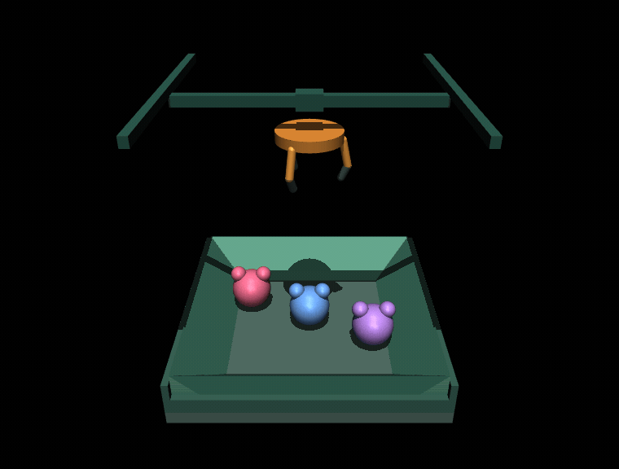

PickDoll 1주차 결과
MuJoCo 인형뽑기에서 화면을 보며 조준하고, 버튼을 눌러 100g 시험 인형을 들어 올리는 프로토타입을 구현했다.
1주차 결과 · 수동 조준과 자동 집기
- 프로토타입 — 40cm 상자, XYZ 이동, 3발 집게, 100g 시험 인형 세 개를 구현했다.
- 조작 — 방향키와 Shift로 화면 기준 이동과 미세 조준을 한다. Enter로 하강·집기·상승을 실행하고 Space로 인형을 놓는다. Tab 또는 1~5로 카메라를 바꾼다.
- 플레이 테스트 반영 — 바닥에 조준 위치를 표시했다. 구석에 떨어진 인형이 안쪽으로 돌아오도록 경사면을 넣고, 집게 패드의 마찰과 인형의 구름 저항을 높였다.
- 검증 — 세 인형을 각각 집어 옮긴 뒤 놓을 수 있었고, 네 구석에서 인형이 다시 집게 이동 범위로 돌아왔다. 다섯 카메라 시점에서 방향키가 화면 방향과 일치했다.

2주차에는 집게가 들어 올린 인형을 배출구까지 옮겨 떨어뜨리는 동작을 연결한다.
실행과 확인
프로젝트 폴더에서 .\.venv\Scripts\python.exe pickdoll.py를 실행한다.
가운데 인형을 바로 집으려면 R로 초기화한 뒤 Enter를 누른다. 다른 인형은 2번 키로 위에서 보는 시점을 선택한 뒤, 바닥의 초록색 점을 인형 몸통에 맞춰 집는다.